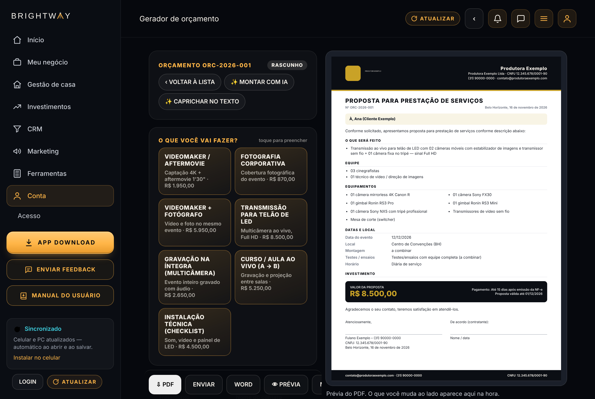

06 · Gerador de orçamento
Gerador de orçamento
Propostas e recibos com a sua marca em poucos toques. Em Meu negócio.

À esquerda você preenche; à direita aparece a prévia do PDF, que muda na hora.
Como fazer um orçamento
- ⚙ MINHA EMPRESA (uma vez só): logo, CNPJ, contatos, quem assina e a chave Pix. Se preferir, use ⇪ IMPORTAR .DOCX com um orçamento antigo seu: a logo e os dados da empresa são copiados de lá. Logo com fundo branco entra sem fundo (PNG transparente); ✂ TIRAR FUNDO e ↺ VOLTAR AO ORIGINAL ficam lá.
- ＋ NOVO ORÇAMENTO e toque no botão do serviço (Videomaker, Fotografia, Transmissão para LED…). O que será feito, a equipe, os equipamentos e o valor já vêm preenchidos. Outro botão soma mais um serviço.
- Preencha cliente, data e local. O botão ☰ OPÇÕES PRONTAS de cada parte abre a lista do que você mais usa: toque para pôr ou tirar.
- ⇩ PDF, WORD ou ENVIAR (WhatsApp/e-mail com o PDF). Tudo é salvo sozinho, com número ORC-ano-001.
Depois do sim do cliente
A lista tem as abas PENDENTES e APROVADOS (e RECUSADOS, quando houver), que abrem e fecham pela seta. Marque ✓ APROVADO: o orçamento passa sozinho para APROVADOS (↺ REABRIR traz de volta) e vira evento em Eventos (data, local e valor contratado) e você gera o RECIBO com o valor por extenso. Se você marcar a opção, o recibo lança o valor como recebido no evento, que vai para os Lançamentos e o Painel.
Mais recursos
- Valor detalhado: diárias e itens, com desconto em R$ ou %. QR code Pix já com o valor.
- ★ SALVAR COMO BOTÃO transforma um orçamento num botão novo (edite em ★ MEUS BOTÕES).
- ✨ MONTAR COM IA: cole a mensagem do cliente e a IA preenche o orçamento para você conferir. ✨ CAPRICHAR NO TEXTO revisa a escrita sem mexer em números.
- 🔏 ASSINAR: assina o PDF com o certificado digital A1 da empresa (arquivo .pfx, e-CNPJ ICP-Brasil), com validade jurídica e carimbo na última página. Certificado e senha não saem do aparelho. Qualquer PDF: Ferramentas → PDF → 🔏 Certificado.
- No FUNIL do CRM, o botão 📄 ORÇAMENTO abre um orçamento já com os dados do contato.